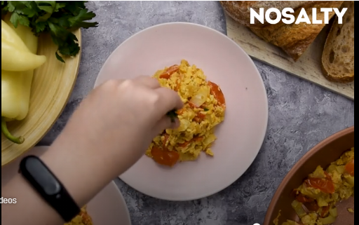

Tonyásos Lecsó
Vissza
Forrás

Story
A lecsó az egyik kedvenc magyar ételem.
Ahány ház, annyiféle elkészítési módja létezik, ami közös bennük: mindegyikben van paprika, paradicsom és hagyma. Innentől kezdve mindenki esküszik valamire: ki szalonnazsírra, ki olajra, ki rizsre, ki pirospaprikára, ki tojásra, ki kolbászra, ki fokhagymára.
Az én verzióm meglehetősen puritánnak tűnik ezekhez képest, de ez a mi családunk verziója, én így készítem.
hozzávalók
- 8 kis db paradicsom
- 0.5 db vöröshagyma
- 2 ek olívaolaj
- 4 db tojás
- só ízlés szerint
- bors ízlés szerint
elkészítés
- Egy serpenyőben az apróra vágott hagymát olajon megdinszteljük.
- A megtisztított paprikát, miután a csumáját eltávolítottuk, csíkokra vágjuk. A paradicsomot felkarikázzuk.
- Először a paprikát tesszük a serpenyőbe, a lángot magasabbra véve, néha megkeverve pároljuk. Amikor már majdnem megpuhultak a paprikacsíkok, hozzáadjuk a paradicsomot is. Sóval és borssal ízesítjük.
- égül a felvert tojásokat ráöntjük a lecsóra és kevergetve pár perc alatt készre sütjük.
| beküldve |
2002.05.16. |
| tegnapi nézetség |
1526 |